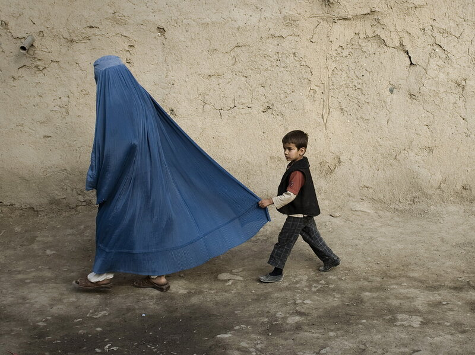

Dies Interview habe ich während letzten Tagen von mehreren Freunden bekommen und bin nach meiner Meinung dazu gefragt worden.
Link zum Interview:
Die Tech-Frau, die den Taliban trotzt
Ausserdem spricht sie mehr über Kabul und Städte, welche nur einen kleinen Teil des Landes umfasst. Was passiert zu den Frauen in südliche, östliche, westliche und nordische Regionen?
Es gibt viele Frauen, die sich in verschiedenen Bereichen in grossen Städten einsetzen. Erfolg ist nur für einige, das ist die Wahrheit. Aber die meisten sind symbolische Bilder für West, um für Frauenrechte mehr Geld zu zahlen. Sie sind die Frauen, die anwesend sind, aber haben keine Macht oder keinen Einfluss in der Gesellschaft, weil Afghanistan leider ein patriarchalisches Land ist. Der Titel "Frauen oder Frauenrechte" ist ein schöner Begriff für die Projektsuchende in Afghanistan. New York times berichtet 2018, dass USA für ein Frauen Projekt 280 Millionen Dollar ausgegeben haben, damit ca. 75,000 Frauen endlich einen Job kriegen. Nach drei Jahren kommt zum Schluss das Resultat und zeigt dass nur 55 Frauen bei diesem Projekt einen Job bekommen konnten.
Sie versucht sich viel positiv darzustellen, das ist was sie ist und versucht über die Hoffnung im Land sprechen, was nur für vielleicht einige Prozent der Afghanen und Afghaninnen gelten. Die Hoffnung ist seit Jahrzehnten für die afghanische Bevölkerung tot. Die Zahl der Opfer genau zeigt, wie gross die Enttäuschung ist. Im 2016 11,000 und diese Zahl steigt bis zu 44, 650 Opfer im 2018. Sie ist eine der glücklichsten Frauen, wer diese Leistungen während dieser dunklen Zeit dank faschistischer und korrupter Regierung geschafft hat. Wäre eine andere Frau, die von Afghanistan geflüchtet ist, statt dieser Frau bei diesem Interview, würde man niemals die gleiche Geschichte hören.